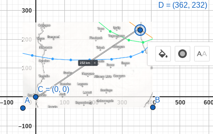

Typhoon Wind Map
Typhoon Parma - 2009
From: Zoom Earth
Point: October 3, 2009 at 3:00PM
Affected locations
| Category (Signal #) |
Place |
Horizontal Distance |
Vertical Distance |
| Signal #1 |
La Union |
362 km |
232 km |
| Signal #1 |
Sorsogon |
110 km |
568 km |
| Signal #1 |
Aurora |
119 km |
228 km |
Graphs
Graph 1
Graph 2
Graph 3

Conclusions based on Graphs
- Conclusion 1: In Graph 1, the typhoon is 232 km far from the place. In Graph 2, the typhoon is 568 km far from the
place, and in Graph 3, the typhoon is 228 km far from the place.
- Conclusion 2: The typhoon is coming from the south-west direction, and is approaching speeds of 150 km/h. The
signals of these places in the table above are all Signal #1.
- Conclusion 3: More than 338,302 people and 70,941 households were affected by the typhoon.
Places Directly Hit
- Tuguegarao, Cagayan (3 October 2009, 3:00 PM)
- Dagupan, Pangasinan (3 October 2009, 3:00 PM)
- Casiguran, Aurora (3 October 2009, 3:00PM)
- Vigan City, Ilocos Sur (3 October 2009, 3:00 PM)